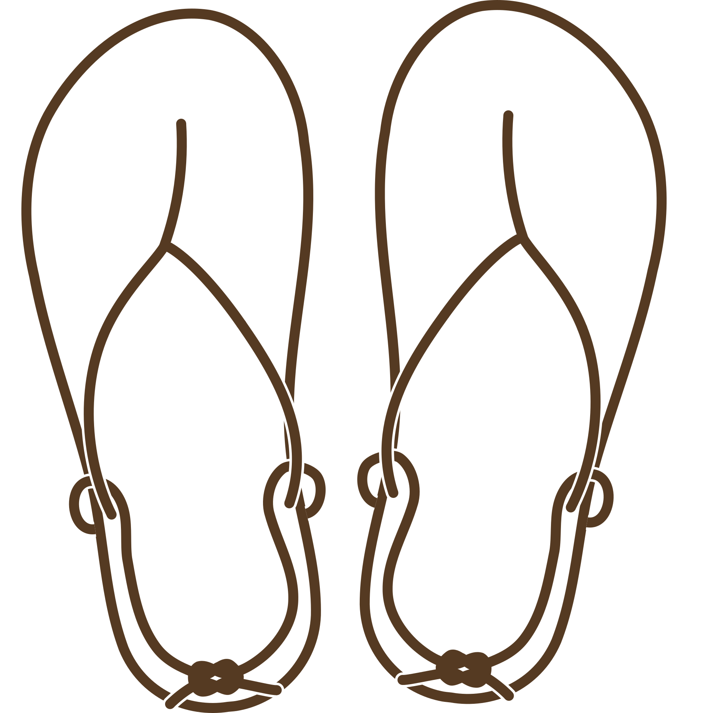
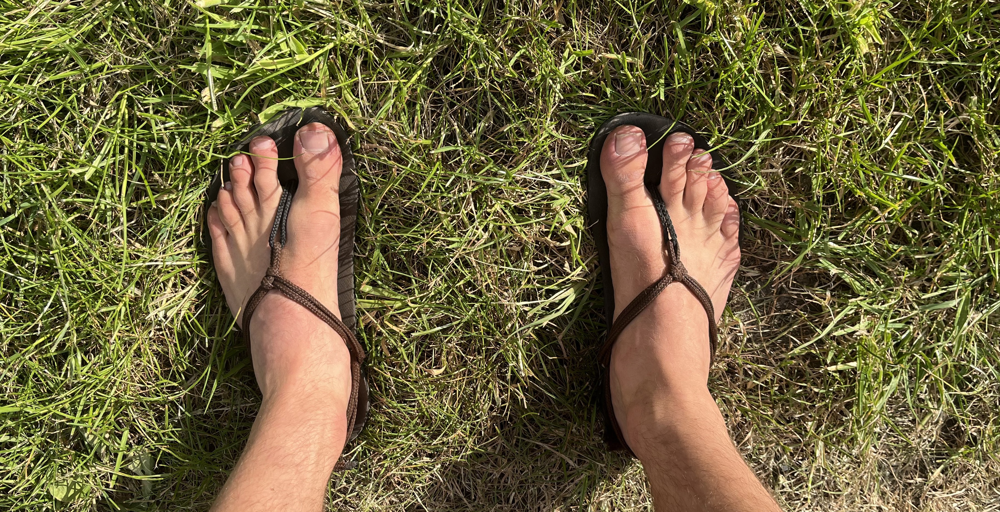

Barefoot Sandals
Hi there, you can buy the materials for making your own barefoot sandals here.
I'm Jesse. I spent the last five years experimenting with making my own barefoot sandals. I feel I have found the right design and materials and would like to share the result with you.
One difficulty I had was finding good materials to make the sandals. I would like to make this step easier for you by offering all the necessary materials in one barefoot sandal making kit.
Contents of the kit
- Sole material
- Cord
- Hole punch
How to make the sandals
- Make an outline of your foot
- Transfer the outline to the sole material
- Cut out the sole material
- Punch the holes in the sole material
- Thread the cord through the holes
- Adjust the cord so that it fits your foot
Barefoot Sandals
Hi there, you can buy the materials for making your own barefoot sandals here.
I'm Jesse. I spent the last five years experimenting with making my own barefoot sandals. I feel I have found the right design and materials and would like to share the result with you.
One difficulty was finding the right materials to make them. I would like to make this step a bit easier for you by offering all the necessary materials in one barefoot sandal making kit.
 Barefoot Sandals
Hi there, you can buy the materials for making your own barefoot sandals here.
I'm Jesse. I spent the last five years experimenting with making my own barefoot sandals. I feel I have found the right design and materials and would like to share the result with you.
One difficulty was finding the right materials to make them. I would like to make this step a bit easier for you by offering all the necessary materials in one barefoot sandal making kit.